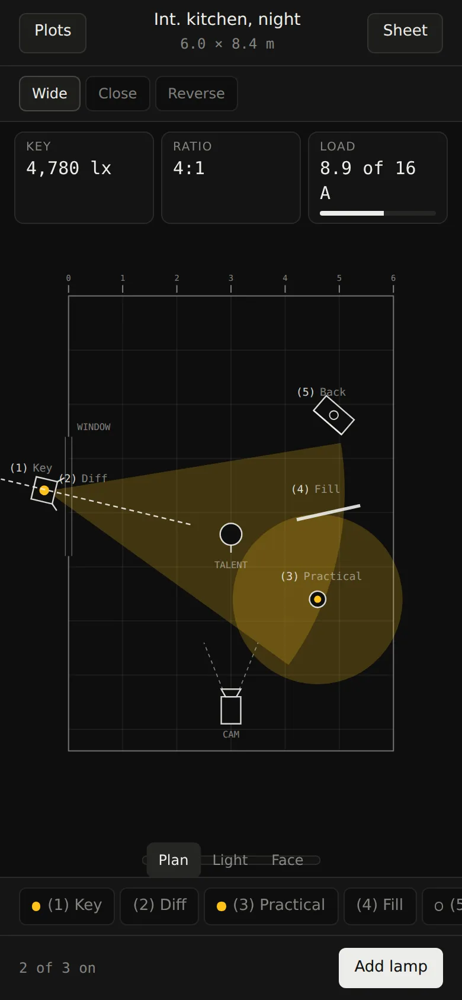
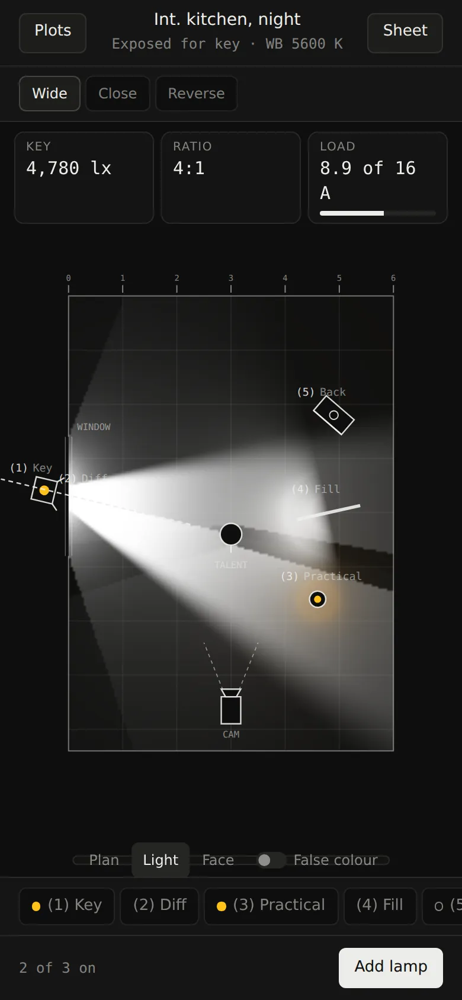
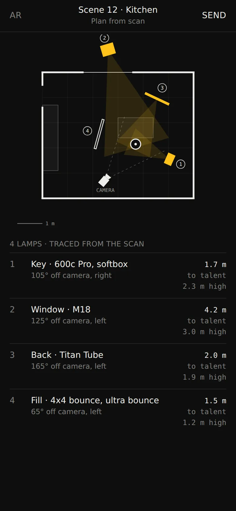
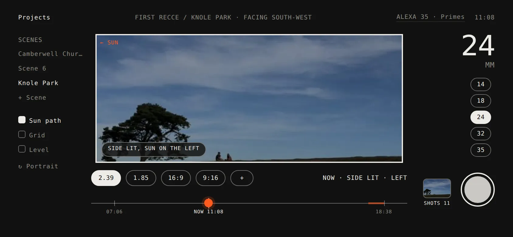
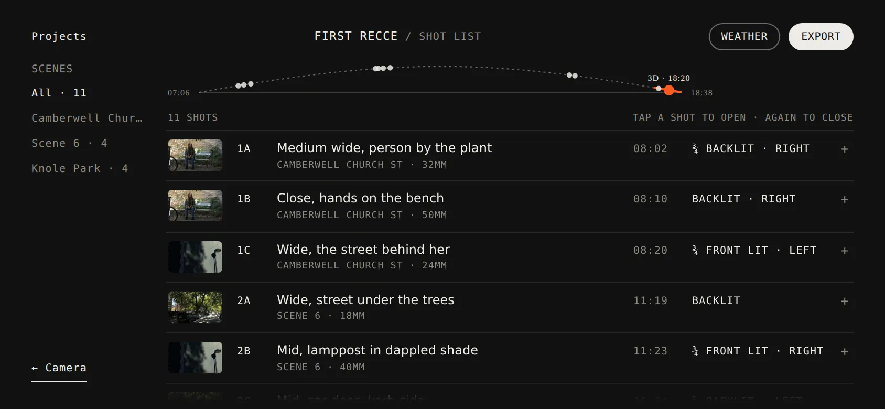

Two apps for film sets
Lampwerk plans the lighting. Out & Scout plans the location. Both made by a working cinematographer.
AppsLampwerk, Out & Scout
MadeBrands, apps, both sites
Sites live16 Oct 2026
NowIn testing on TestFlight
lampwerk.comWalk the set with the phone and tag the lamps in AR. The site shows it working before you download anything.
Why we made them
On a shoot day the lighting plan and the location notes live in WhatsApp threads, screenshots and the back of a call sheet. We wanted one place for each, that works offline in a field.



LampwerkThe same set as a plan, as light, and as an AR scan of the room.
The gaffer sheetEvery head, its distance and its power, on one page you can send to the crew or the hire house.
outandscout.comDrag the sun across the frame and watch the light change on the shot.


Out & ScoutThe viewfinder shows real lens lines; the shot list knows when the light is right.
The shot list, page by pageOne page per shot with the frame, the light and when to be there.
What we made
- BrandsTwo names, two marks, two looks that don’t look like ours
- AppsSwiftUI for iPhone, offline, plans saved on the phone
- Siteslampwerk.com and outandscout.com, each with a working demo
- TestingTestFlight builds with founding testers from real crews
Where they are
Both apps are in testing, not on the App Store yet. Out & Scout is already used on real recces. Lampwerk is with gaffers on TestFlight.
We know what a set needs because we work on them.